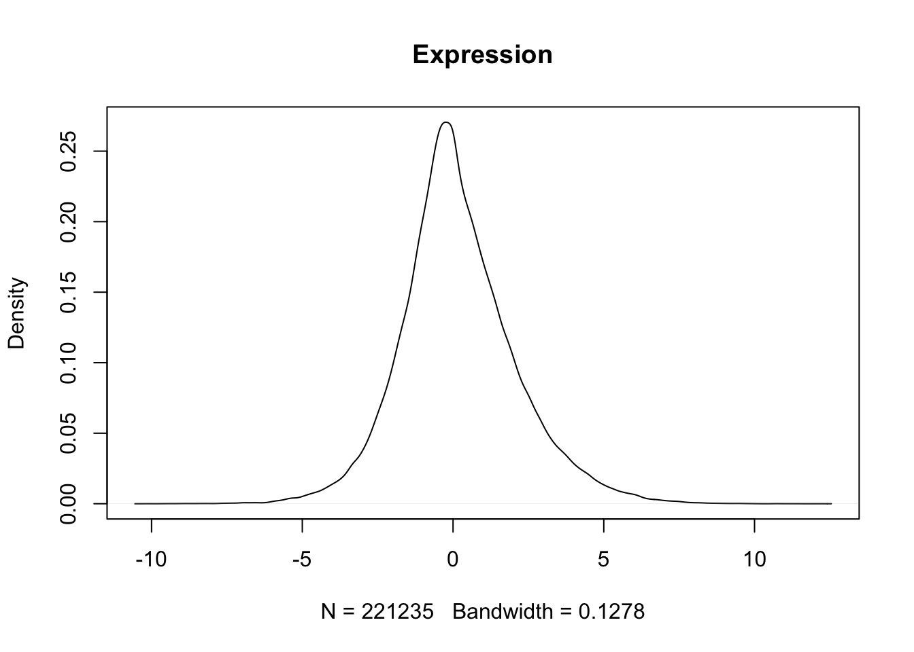
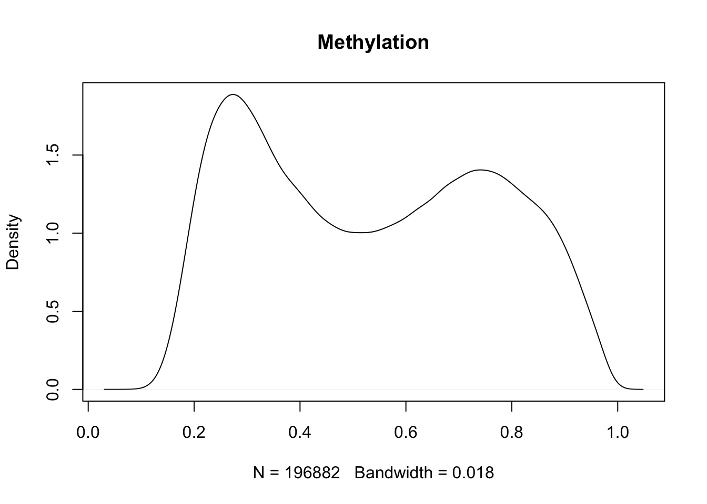
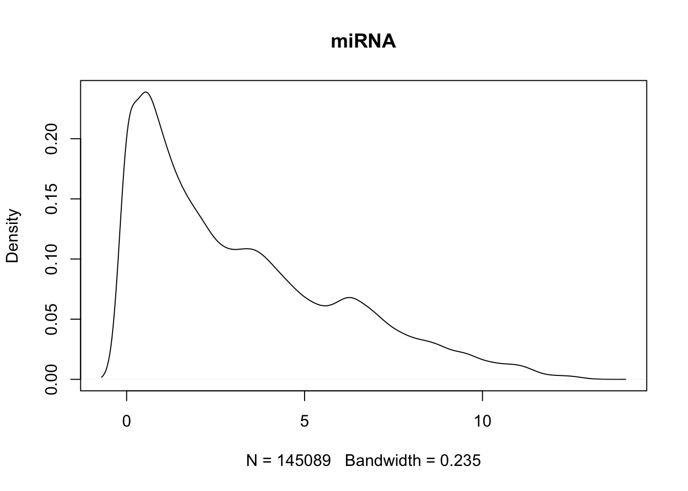

#install.packages("Rfssa") #if you want to download through github
#
#library(Rfssa)
#
#url <- "https://github.com/KechrisLab/ASAShortCourse-MultiOmics/blob/main/Lecture%202/brca_dat.Rdata"
#
#load_github_data(url)
load("brca_dat.Rdata")Multi-modal data
Data integration
We’ll be using mRNA expression, microRNA (miRNA), and DNA methylation data from 343 subjects with breast cancer (from TCGA’s BRCA data)1. The data was previously formatted and pre-processed by Sierra Niemec ASAShortCourse-MultiOmics using the following format:
brca_dat <- list("clinical" = dataClin, "MO" = list("Expression" = exp_matched, "Methylation" = methyl_matched, "miRNA" = miRna_matched) )
It’s essentially a list with a dataframe for clinical data under “clinical”, and then a list (“MO”) of the 3 omics types (“Expression” for mRNA expression, “Methylation” for DNA methylation, and “miRNA” for the microRNA expression)*.
**NOTE: As seen in the lecture, we are performing vertical integration so it is very important that all data is matched by sample!**
We have a total of 343 subjects, 645 mRNA transcripts, 574 CpG sites (methylation), 423 miRNA transcripts.
Loading
Our goal with this analysis is to start familiarizing ourselves with different sources of data
Understanding
Let’s get a quick look at our data
names(brca_dat)[1] "clinical" "MO" paste("dim of clinical data:", dim(brca_dat[["clinical"]]))[1] "dim of clinical data: 343" "dim of clinical data: 14" head(brca_dat[["clinical"]]) bcr_patient_barcode age_at_diagnosis ajcc_pathologic_stage
TCGA-A1-A0SH TCGA-A1-A0SH 14595 Stage IIA
TCGA-A1-A0SJ TCGA-A1-A0SJ 14383 Stage IIIA
TCGA-A1-A0SK TCGA-A1-A0SK 20048 Stage IIA
TCGA-A1-A0SO TCGA-A1-A0SO 24826 Stage IIB
TCGA-A2-A04N TCGA-A2-A04N 24155 Stage IA
TCGA-A2-A04P TCGA-A2-A04P 13238 Stage IIIC
ajcc_pathologic_t ajcc_pathologic_n ajcc_pathologic_m vital_status
TCGA-A1-A0SH T2 N0 (i-) M0 Alive
TCGA-A1-A0SJ T3 N1a M0 Alive
TCGA-A1-A0SK T2 N0 (i-) M0 Dead
TCGA-A1-A0SO T2 N1 M0 Alive
TCGA-A2-A04N T1c N0 (i-) M0 Alive
TCGA-A2-A04P T2 N3c M0 Dead
days_to_death days_to_last_followup pathologic_stage
TCGA-A1-A0SH NA 1437 Stage_II
TCGA-A1-A0SJ NA 416 Stage_III
TCGA-A1-A0SK 967 NA Stage_II
TCGA-A1-A0SO NA 852 Stage_II
TCGA-A2-A04N NA 4354 Stage_I
TCGA-A2-A04P 548 NA Stage_III
BRCA_Pathology BRCA_Subtype_PAM50 fustat futime
TCGA-A1-A0SH Mixed LumA 0 1437
TCGA-A1-A0SJ IDC LumA 0 416
TCGA-A1-A0SK Other Basal 1 967
TCGA-A1-A0SO NA Basal 0 852
TCGA-A2-A04N Other LumA 0 4354
TCGA-A2-A04P IDC Basal 1 548Check sample names all match
# check sample names all match
identical(brca_dat[["clinical"]]$bcr_patient_barcode, colnames(brca_dat[["MO"]][["Expression"]]))[1] TRUEidentical(brca_dat[["clinical"]]$bcr_patient_barcode, colnames(brca_dat[["MO"]][["Methylation"]]))[1] TRUEidentical(brca_dat[["clinical"]]$bcr_patient_barcode, colnames(brca_dat[["MO"]][["miRNA"]]))[1] TRUEidentical(colnames(brca_dat[["MO"]][["Expression"]]), colnames(brca_dat[["MO"]][["Methylation"]]))[1] TRUEidentical(colnames(brca_dat[["MO"]][["Expression"]]), colnames(brca_dat[["MO"]][["miRNA"]]))[1] TRUEidentical(colnames(brca_dat[["MO"]][["Methylation"]]), colnames(brca_dat[["MO"]][["miRNA"]]))[1] TRUELet’s make sure there are no missing values:
sum(is.na(brca_dat[["MO"]][["Expression"]]))[1] 0sum(is.na(brca_dat[["MO"]][["Methylation"]]))[1] 0sum(is.na(brca_dat[["MO"]][["miRNA"]]))[1] 0Let’s also have a quick look at the distributions:
Transcriptomics
range(brca_dat[["MO"]][["Expression"]])[1] -10.16825 12.16313plot(density(brca_dat[["MO"]][["Expression"]]), main = "Expression")
Methylation
range(brca_dat[["MO"]][["Methylation"]])[1] 0.08450738 0.99379288plot(density(brca_dat[["MO"]][["Methylation"]]), main = "Methylation")
miRNA
range(brca_dat[["MO"]][["miRNA"]])[1] 0.00000 13.32126plot(density(brca_dat[["MO"]][["miRNA"]]), main = "miRNA")
Footnotes
The data was orginally referenced in this article and the following arrays were used:
mRNA Gene Expression Profiling: Agilent custom 244K whole genome microarrays
Array-based DNA methylation assay: Illumina Infinium DNA methylation platforms, HumanMethylation27 (HM27) BeadChip and HumanMethylation450 (HM450) BeadChip (Illumina, San Diego, CA)
The microRNA was sequenced.↩︎